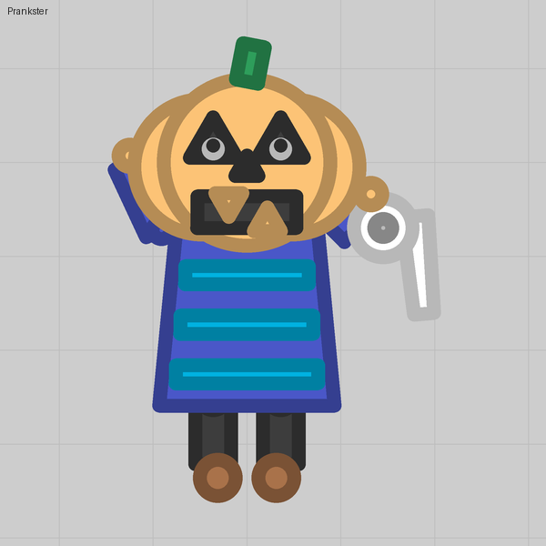

A body that trails behind
An invisible rear barrel that always fires a shot with no speed leaves a segment wherever the tank was, so a chain follows every bend.
What you see
A snake. The head is the tank; the body is a chain of hexagons that follows the path it took, bending round every corner and thinning toward the tail. Nothing on a tank can bend, so the only way to get a body that follows the path is to leave it behind.
The trick
A barrel pointing backward, invisible, with Always fire on and a quick Reload, firing a bullet with Bullet speed 0 and Launch speed 0. A shot with no speed stays exactly where it was fired. As the tank moves, each new segment is dropped a little further along, and each one disappears after its Lifetime, so the chain has a fixed length.
The taper: the segment's projectile has Running out of time sets it off, and a barrel riding it with Fires when it bursts drops a smaller end piece that lives a bit longer.
Numbers that matter
| Field | Value | Notes |
|---|---|---|
| Reload | 0.25 | Four segments a second: close enough to touch at walking speed |
| Lifetime | 2 s | Eight segments long; longer tails cost more budget |
| Bullet size | 1.4 | Segment radius about 29; polygon shots draw about 1.3 × bigger than round ones |
| Penetration | 5 | Segments are bullets with health: they block and hurt enemies |
| End piece Bullet size | 1 | On a barrel riding a projectile, size is relative: the child is parent × size ÷ 2 |
Gotchas
- Segments are real bullets: they damage and block enemies, and at rest they pile up under the tank.
- Budget: this one dropper is 4 shots a second, 8 alive, plus the end pieces. Two or three graded tails need the Reload stat cap at 0 (lesson 15).
- A piece spawned by a projectile's barrel is a plain copy and fires nothing itself, so the taper is one step deep. For a graded taper use several droppers, one per size, with growing lifetimes.
- The shots keep the team colour, which is exactly what you want on a snake.
Where we used it
